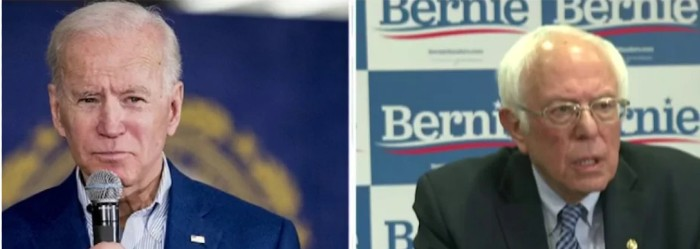

Entertaining News
Donald J. Trump has shown America what it means to “fake it until you make it” as his career has been built on his false appearances, outrageous fraud, and shameless lies. His last performance appeared to backfire for him on the show 60 minutes as Donald Trump began to accuse reporter Lesley Stahl of producing fake and biased questions. One of the concerns addressed by Lesley Stahl during the interview, the topic of healthcare. Seeing how Trump has done nothing for American healthcare, besides trying to dismantle the Affordable Care Act, he alongside his team tried to present to Lesley an empty book “full” of healthcare plans under the Trump administration. This plan however backfired on him when a release of a zoomed in photo of the book proved it to be blank. The interview ended short however because 45 minutes into the interview Donaled Trump walked out and later that night went to twitter and threatened to release the footage before its airtime to show “everyone...a glimpse of [a] FAKE and BIASED interview…”. When the truth is all that was “FAKE” was Donald Trump's plan for healthcare.
Since the Democratic primaries, the major debate comes to the healthcare system. Far left sided democrats Bernie Sanders and Elizabeth Warren proposed a disastrous plan of Medicare-for-all” that would grant free access of healthcare to everyone at the cost of major tax increases. But now that Joe Biden is the only candidate left in the Democratic race, let's have a deeper look into his radical healthcare plan. Joe Biden's plan for healthcare can be summarized by the four main fundamental elements: creating a public health insurance similar to Medicare, dramatically increase subsidies for individuals and families, roll back some deregulatory efforts efforts made by Trump, and use the new public option as a replacement for Medicaid in states who refused Medicaid programs. As a whole, this plan would cause catastrophic impact on the U.S. healthcare system as tens of millions of people would be put into a government managed system that will rob healthcare workers of their hard earned money, increase deductibles to an unreasonable amount, and transform the U.S into a single-payer healthcare system model.
The main difference between these two articles and the rest of the articles we have read is that these articles strongly lack any hard evidence. The majority of the written articles are purely opinion and while there may be some factual information in them they do not have any cited sources in which information was received. These can be listed as entertainment news rather than news because they are not informational written articles but rather slander and strong opinion toward the topic of healthcare. For example, in article one from Occupy Democrats, the author states, “Seeing as Trump has done nothing for American healthcare besides try to dismantle the Affordable Care Act multiple times…”. Another example can be seen in the fox article as the author states, “ In light of the multi-trillion-dollar deficit now being run up to deal with the coronavirus pandemic, the Sanders and Warren plans look even more harmful today.” However, despite the opinionated written articles, many people can interpret and accept these types of news. This can result from people feeling comfortable accepting information from sources that reside with their own set beliefs. This is dangerous because it can one, leak false information, and two cause people to become closed-minded to the ideas of other sides of an argument. To ensure that the news we are receiving is not fake, we can take precautionary measures such as fact-checking the information we read online. Fact-checking can be completed by conducting your own research on the topic, researching the source from which you received the information, and also speaking about the topic with several others who might be educated.